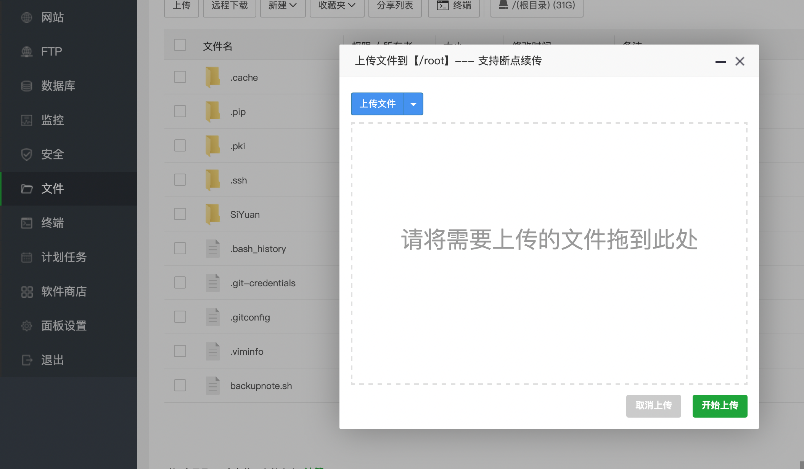
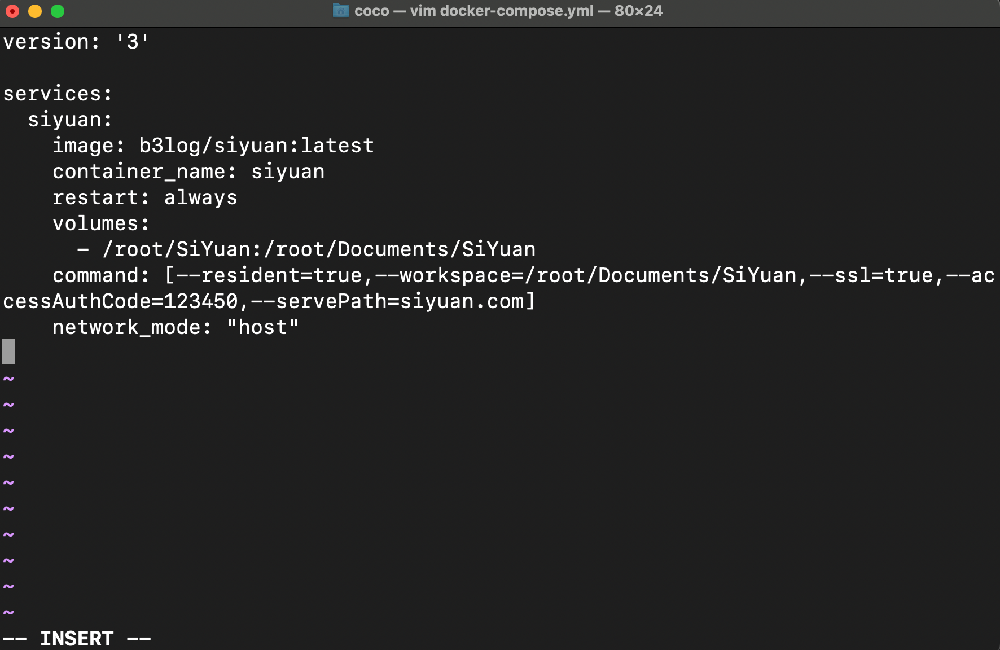
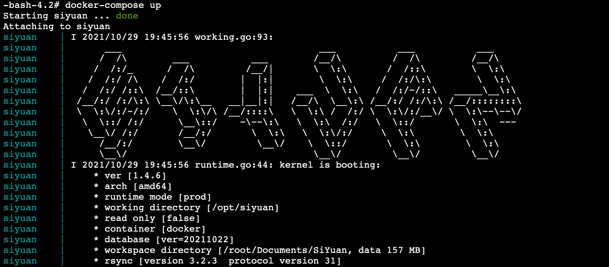
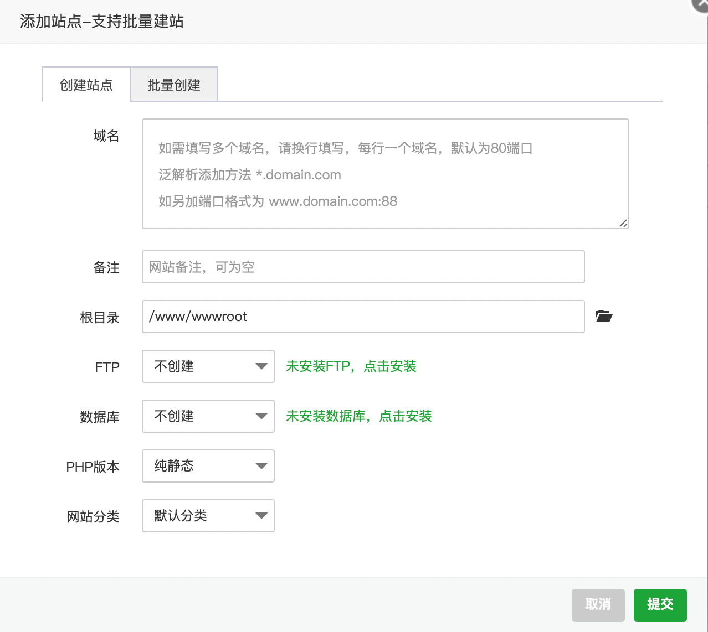
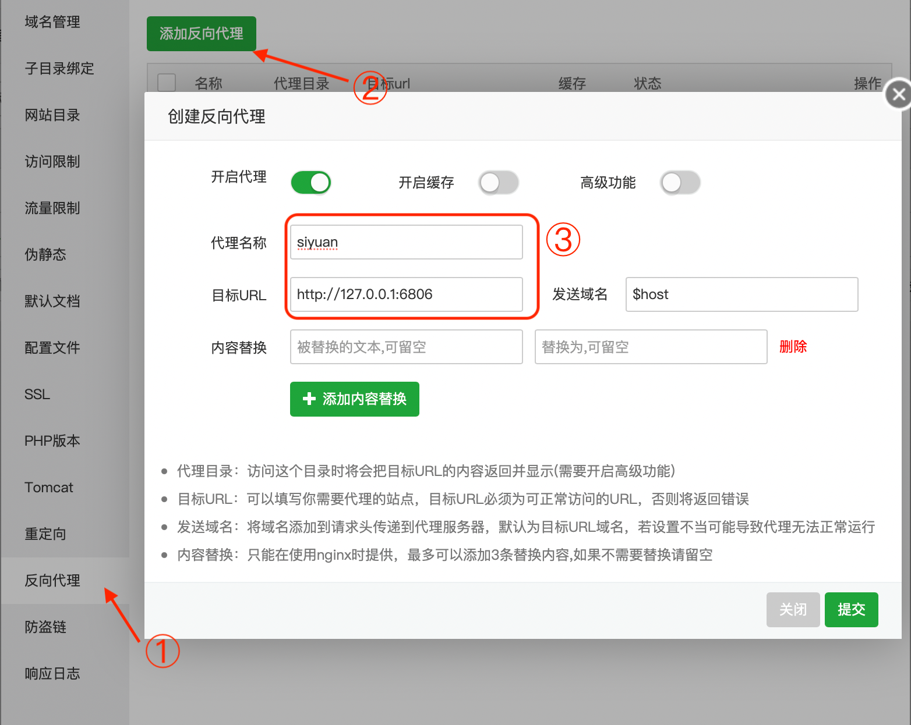
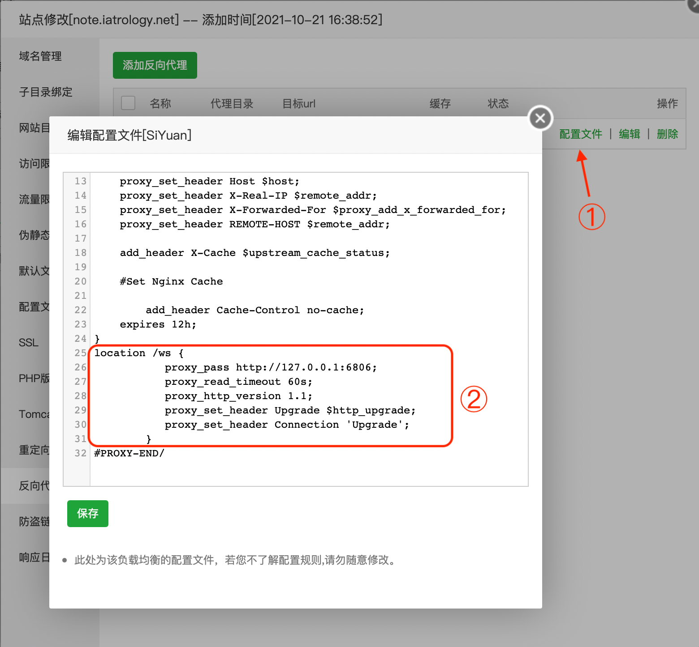

思源笔记docker搭建及后续使用优化（小白向）
一、docker 服务端的安装（使用 Docker-Compose）
- 1.
安装 docker
curl -fsSL https://get.docker.com | bash -s docker --mirror Aliyun - 2.
安装 docker-compose
curl -L https://get.daocloud.io/docker/compose/releases/download/1.24.1/docker-compose-`uname -s`-`uname -m` > /usr/local/bin/docker-compose chmod +x /usr/local/bin/docker-compose命令中的 1.24.1 是 docker-compose 的版本号，可以修改为自己想要的版本号 上述两步出现问题的需要自己百度解决，或者直接在下面评论
- 3.
准备笔记数据目录 我是直接将 SiYuan 目录放在了/root 目录下 （安装了宝塔的可以直接在这个界面将本地的 SiYuan 目录拖到这里）  所以我的资源路径就是/root/SiYuan
- 4.
准备 docker-compose.yml 文件
version: '3' services: siyuan: image: b3log/siyuan:latest container_name: siyuan restart: always volumes: - /root/SiYuan:/root/Documents/SiYuan command: [--resident=true,--workspace=/root/Documents/SiYuan,--ssl=true,--accessAuthCode=授权码,--servePath=绑定域名] network_mode: "host"修改代码中的中文内容为你自己需要的，不需要绑定域名的可以将 serverpath 参数删除 通过 vim 在/root/SiYuan 路径下新建一个 docker-compose.yml 文件，写入上面的内容
cd /root/SiYuan #进入/root/SiYuan路径 vim docker-compose.yml #新建一个docker-compose.yml文件并打开编辑这个时候按一下 i进入编辑模式，然后复制上面修改好的内容，返回命令窗口 Ctrl+V粘贴内容 这时候你大概能看到如下界面  现在按一下 Esc，然后输入:wq，docker-compose.yml 文件就建好了
- 5.
通过 Docker-Compose 部署并启动 docker
cd /root/SiYuan #进入刚刚docker-compose.yml文件所在的目录 docker-compose up #启动思源稍等片刻，你就能看到如下界面  这时候 docker 端的思源笔记就安装启动好了，你服务器的 ip:6806 就能进入了（记得打开防火墙端口）
二、docker 端的更新
众所周知，思源笔记的更新是非常快的，所以，我们必须掌握简便的更新方法，这也是我为什么使用 Docker-Compose 部署的原因。粗鲁一点，直接复制粘贴到命令窗口
cd SiYuan
docker-compose stop
docker-compose rm siyuan
docker rmi b3log/siyuan
docker-compose up
三、配置反代，并设置 SSL
- 1.
在服务器中新建一个网站，用来反代

- 2.
配置反向代理（如图 3 填）

- 3.
配置 nginx（否则会卡在 logo 界面一直转圈圈）
location /ws { proxy_pass http://127.0.0.1:6806; proxy_read_timeout 60s; proxy_http_version 1.1; proxy_set_header Upgrade $http_upgrade; proxy_set_header Connection 'Upgrade'; }将上面的代码填入 ② 所示位置

- 4.
申请 SSL 证书，这个我相信你们都已经有了（证书我是 Dnspod 申请的，感觉蛮方便）
- 5.
在下载下来的证书文件夹中找到 nginx 文件夹，打开 key 结尾和 crt 结尾的两个文件，将内容分别拷贝到下面两个地方，然后保存，这就大功告成了（偷偷说一句，反代后不配置 ssl 也是会卡在 logo 那的）

- 6.
这时候，就可以通过域名的方式在各个设备上访问你的笔记了
四、将 docker 版的思源笔记打包成应用
或许，你的 MacBook 打开 edge 会有一丢丢慢，或许你不想每次写笔记都要打开 edge，或许你想每次用思源笔记都像在本地安装了一样，快来试试 nativefier 吧
- 1.
安装 nativefier（需要先安装 npm）
npm install nativefier -g - 2.
将这个文件下载下来，重命名为 app.icns，放到你的用户目录下
- 3.
打包
nativefier --name "SiYuan" "你配置的笔记域名" --full-screen true --icon /Users/coco/app.icns我配置了 full-screen （默认全屏打开软件）和 icon（应用图标，后面的路径就是图标的路径）参数，它还有许多可以配置的选项，非常简单，可以通过
nativefier--help命令来查看，我相信你们都是看得懂的
五、通过 git 定时备份笔记
改日再更，今天真的累了
参考文章
六、最后的话
我个人觉得 docker 部署才是最适合我的方式，数据集中管理，不会出现数据的冲突，在任何一台联网设备上都可以实现笔记的查看修改。甚至，更新也可以通过简单的命令更新所有设备上的版本，还可以使用 git 备份笔记，实现笔记版本的回溯。
思源笔记真的是我在 notion、语雀、为知、幕布等用下来感觉最满意的一款笔记（我没有任何贬低其他软件的意思，只是感觉思源更加适合我）。甚至白嫖也能获得与会员差不多的本地体验，但是，我更呼吁大家积极支持开发者，尊重开发者的劳动成果， 鼓励他们能够投入更多的精力（可能已经足够多了 😂），来让这款软件更加完善。98 一年的会员真的不贵，它所产生的价值肯定远不止 98，如果你入坑了，并且真的觉得软件不错的话强烈建议开个会员支持一波开发者。
emmm，差点忘了，如果开会员记得填我推荐码 H86uQsl ，不要记错了，是 H86uQsl